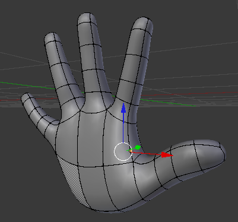
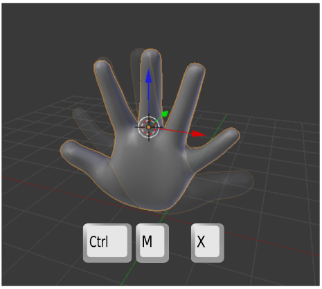
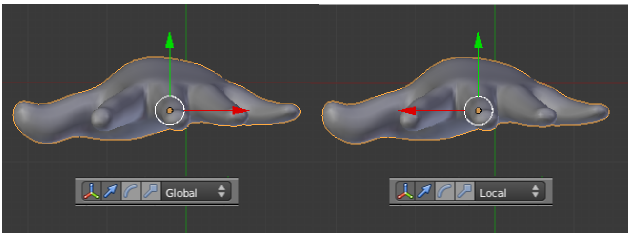
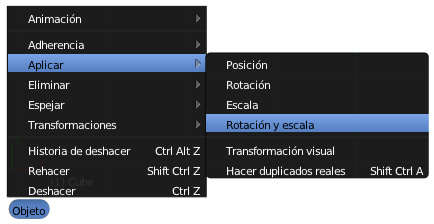

Simetría no interactiva
Es habitual querer invertir simétricamente un objeto que ya está modelado porque durante el flujo de trabajo hemos cambiado de idea respecto a la composición o asuntos similares.
La edición no puede ser más sencilla pero nos viene muy bien para repasar asunto relativos a ejes Locales y Globales y adquirir un nuevo conocimiento.
La simetría en sí se consigue seleccionando el objeto y usando el menú Objeto/Espejo y escogiendo el eje que se desee. Podemos optar por dar la orden por teclado con "Control_M" y después la tecla relativa al eje.
Tenemos modelada esta mano de baja poligonización (low-poly).
Es una mano derecha (por la curvatura del pulgar y otros asuntos anatómicos) pero suponemos que lo que necesitamos es la izquierda. Una opción aceptable es usar el modificador Espejo. Una vez que lo aplicáramos nos desharíamos de la mano derecha y nos quedaríamos con la izquierda. Pero lo lógico es hacer que este mismo objeto se convierta directamente en el simétrico. En nuestro ejemplo es "Control_M X".
El eje de simetría pasa por el Origen. Igual que ocurre en el resto de las ediciones de este tipo esa "X" se refiere a los ejes Globales del mundo 3D, mientras que si pulsamos dos veces la "X" estamos restringiendo al eje X Local. Lo que pasa es que en esta mano los ejes Locales y los Globales coinciden porque el cubo original con el que se modeló no se giró en ningún momento.
Sin embargo con la operación Objeto/Espejo hemos alterado uno de los ejes Locales (el X) que ha quedado invertido respecto al Global como consecuencia lógica de la edición.
Si no corregimos esto, se convertiría en un auténtico quebradero de cabeza al seguir haciendo ediciones. Llegaríamos a pensar que Blender se ha vuelto incoherente por completo.
Igualar ejes Locales con Globales
Esta es la solución al problema anterior. Salvo que deseemos por un motivo muy concreto mantener los ejes Globales y los Locales desiguales lo mejor es darle la orden a Blender de que reorganice los ejes Locales para igualarlos con los Globales. Lo hacemos con Objeto/Aplicar/Rotación y escala.
